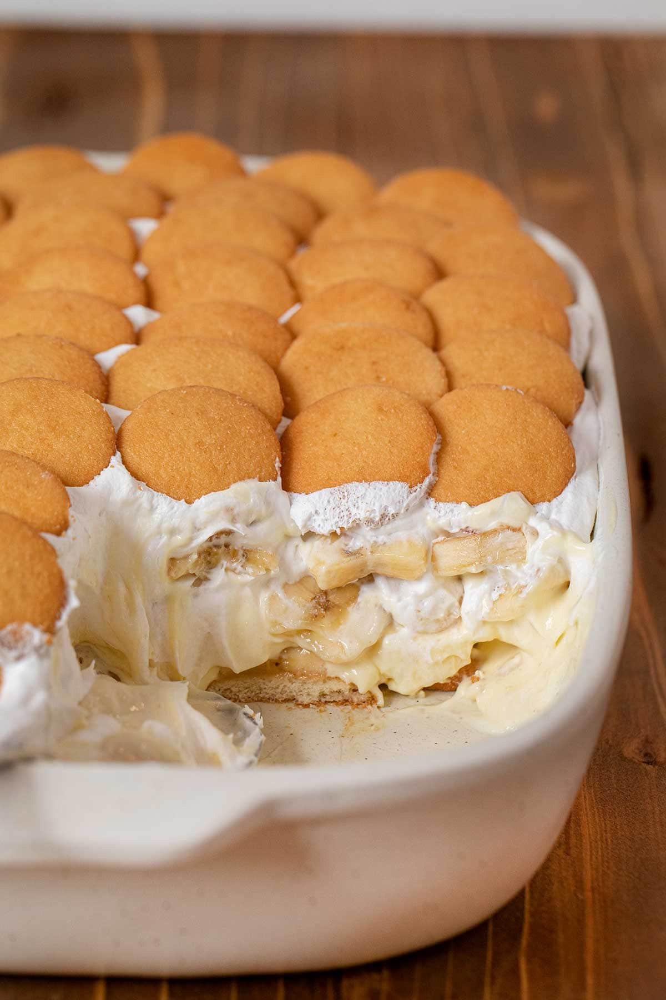

Worlds Best Banana Pudding

Ingrediants
- 4 Large Eggs
- 3/4 cup sugar
- 3 tablespoons all-purpose flour
- 1/2 teaspoon plus a pinch salt
- 2 cups whole milk
- 1/2 teaspoon vanilla extract
- 30 to 40 vanilla wafers
- 3 to 4 medium ripe bananas
Steps
- Separate the yolks from the whites of 3 of the eggs; set aside the whites. Add the remaining whole egg to the yolks.
- In a saucepan, whisk together 1/2 cup sugar, the flour and 1/2 teaspoon salt. Stir in the whole egg and 3 yolks, and then stir in the milk. Cook uncovered, stirring often, until the mixture thickens, about 10 minutes. Remove from the heat and stir in the vanilla.
- Preheat the oven to 425 degrees F.
- Spread a thin layer of the pudding in a 1 1/2-quart casserole dish. Arrange a layer of vanilla wafers on top of the pudding. Thinly slice the bananas crosswise, about 1/8 inch thick, and arrange a layer of banana slices over the wafers. Spread one-third of the remaining pudding over the bananas and continue layering wafers, bananas and pudding, ending with pudding.
- To make the meringue, beat the reserved egg whites with a pinch of salt until they are stiff. Gradually beat in the remaining 1/4 cup sugar and continue beating until the whites will not slide out of the mixing bowl when it is tilted.
- Spread the meringue over the pudding with a spatula, making a few decorative peaks on top, and bake until the meringue is lightly browned, 5 minutes.